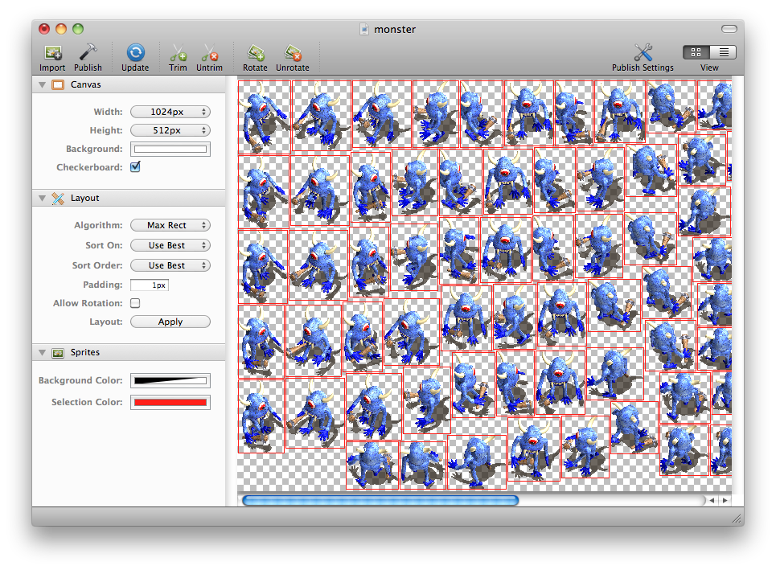

Introducing Sprite Sheets
4 years ago
LimeJS now has full support of sprite sheets. This means that you can gather your image assets to the same file and define areas that contain only the parts you are interested about. This lets you load multiple images with one request and export your whole keyframe animation with single file.
To define a fill for a part of a image there is a new Frame fill. It takes in an image(as url or Image element) and frame definition(as goog.math.Rect object or numbers). You can then use the Frame fill instance as you would use any other fill. All the same methods can be used for Frame as for Image fill(this covers repeating patterns) and performance should be also similar.
1 2 | var frame = new lime.fill.Frame('sheet.png', 20, 30, 200, 150); //x , y, width, height box.setFill(frame); |
By default the fill will take the same size as your object but you can change it with setSize(width,height,opt_isrelative) method. You may also change around the position from where the drawing of a fill starts with method setOffset(x,y,opt_isrelative). If the opt_isrelative parameter is set then the values don’t represent actual pixel values but the factors the target size is multiplied with.
1 | frame.setSize(.5,.5,true); // make fill half the target size |
Of course managing your sprite sheets by hand and updating the positions directly to the code can be very hard. To make it much easier other people have made cool apps like Zwoptex, TexturePacker, SWFSheet and many more. These programs allow you to import your assets and export them out as single image plus a coordinate definition file. Luckily LimeJS has direct support for both of these files.
Lets look at SWFSheet first. This program, made by author of many great books Keith Peters, allows to convert a Flash animation exported as a SWF into separate frames inside a sprite sheet. There’s a good video about the functionality here. After setting all correct parameters save the sheet and metadata. Select “Zwoptex” as metadata format.
Now put the files inside your project. The metadata file is XML so we have to convert it to template asset to directly use it from the code. To do that run:
1 | bin/lime.py gensoy path/to/the/spinner.zwoptex |
After doing this the contents of the file can be accessed from Javascript under namespace prefix lime.ASSETS.
1 2 3 | goog.require(lime.ASSETS.spinner.zwoptex); var myfile = lime.ASSETS.spinner.zwoptex; //assignment to local not really needed |
Now lets construct the animation again. First create a lime.SpriteSheet object. Then you can ask for all the separate frames from the sheet with ’getFrame(name)’ method.
1 | var ss = new lime.SpriteSheet('assets/spinner.png',lime.ASSETS.spinner.zwoptex); |
Create a sprite to run the animations on. Set the initial frame. Note that the frame name does not reflect a URL to the file but only the name frame is defined for the sheet.
1 2 | var sprite = new lime.Sprite().setSize(100,100).setFill(ss.getFrame('frame_0001.png')); layer.appendChild(sprite); |
And finally create KeyframeAnimation. Set up all its frames and run it on the sprite.
1 2 3 4 5 | var anim = new lime.animation.KeyframeAnimation(); for(var i=1;i<=60;i++){ anim.addFrame(ss.getFrame('frame_'+goog.string.padNumber(i,4)+'.png')); } sprite.runAction(anim); |
Thats it. Here is how it looks like (using the test files that came with SWFSheet):
Now lets make something bit more interactive. I downloaded some game asset tiles for a monster character from this page. Zip file contains BMP files that need to be converted to PNGs for Zwoptex app. I choosed the walking related images, imported them into Zwoptex and turned on trimming. It looked like this:

Publishing is similar as for SWFSheet. Format currently supported in LimeJS is Zwoptex Flash format(can be changed from publishing settings). After that convert the coordinates XML file to assets same way as for SWFSheet(gensoy).
The objective is to make the monster object move to the place clicked/touched while animating through the frames same time. I won’t paste full source code (can be seen here) but here is the basic function that does it.
1 2 3 4 5 6 7 8 9 10 11 12 13 14 15 16 17 18 19 20 21 22 23 24 25 26 27 28 29 30 31 | test.moveToPosition = function(monster,pos){ var delta = goog.math.Coordinate.difference(pos,monster.getPosition()), angle = Math.atan2(-delta.y,delta.x); // in radians //determine the direction var dir = Math.round(angle/(Math.PI*2)*8); // 8th of the circle var dirs = ['e','ne','n','nw','w','sw','s','se']; //from original file names if(dir<0) dir=8+dir; //backwards for negative angles dir = dirs[dir]; // move animation var move =new lime.animation.MoveBy(delta).setEasing(lime.animation.Easing.LINEAR).setSpeed(3); //setSpeed is just a helper that sets the duration based on the length of the delta monster.runAction(move); // keyframe animation var anim = new lime.animation.KeyframeAnimation(); anim.delay= 1/7; // 1/7 sec between frames, too fast otherwise for(var i=1;i<=7;i++){ //add the frames anim.addFrame(test.ss.getFrame('walking-'+dir+'000'+i+'.png')); } monster.runAction(anim); // on stop show front facing frame goog.events.listen(move,lime.animation.Event.STOP,function(){ anim.stop(); //keyframeanimation has no duration so have to be stopped manually monster.setFill(test.ss.getFrame('walking-s0001.png')); }); }; |
Here is how it looks like. Click on a monster first to select it then somewhere else to move it to this position.